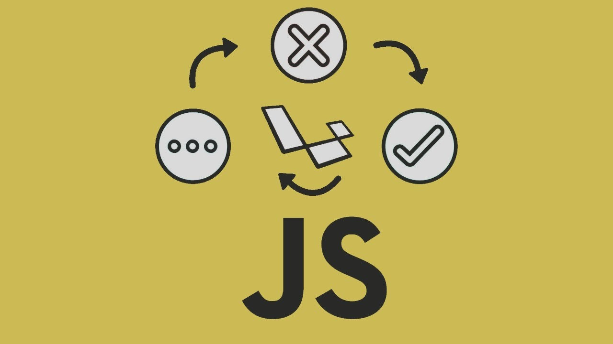

I am spending my time
learning and practicing code languages and specific techniques. Having been trapped indoors by the pandemic, most would find it very
difficult to have something to do, however, for us developers, we can find several things to keep busy!
I find that using LinkedIn Learning videos help me understand and get a solid foundation of whatever subject I am looking into.
I also try to find some videos on YouTube to see if I can find more details on a particular program.
What I learned from LinkedIn
Below you will find the links to my repos created as I code along with the
course as well as add my own comments to better understand what everything is doing. A principal that I like to hold is if you can't explain what the code is doing, then don't copy it!
JS Test Driven Development

Besides creating a file with .test at the end of it, the core concept of JS TDD is to make a test FIRST before anything else. TDD was broken down into three parts:
1.) Create a failing test - RED
2.) Make the test pass - GREEN
3.) Improve on it - REFACTOR
The course encouraged writing tests because it would help us clarify our thinking, improve communication between developers, and improve the structure of the production code.

This was one of the most fascinating courses that I took. With JavaScript being the core language, learning all the frameworks went fairly easy.
Understanding how Node can create the server for your backend along with making things even more simpler by using Express to not only use less code but makes the system run faster.
MongoDB is something that I am still activly learning, I found some similarites when I worked with Rails like how schemas should be created as well as models.
A fast and powerful stack, I want to deep dive into learning more about this to create impressive applications and websites!

Having learned some of what Node can do, I decided to deep dive further to get a better understanding of what else can be done with Node.
The majority of what Node is capable of doing is dependent on what node packages or modules is installed and used. And then depending on what you installed you can use specific methods
and manipulate any information however you'd like! Because of it's asyncronous behavior, it can work several programs in a timely matter.

Downloading more knowledge..it's really exciting!